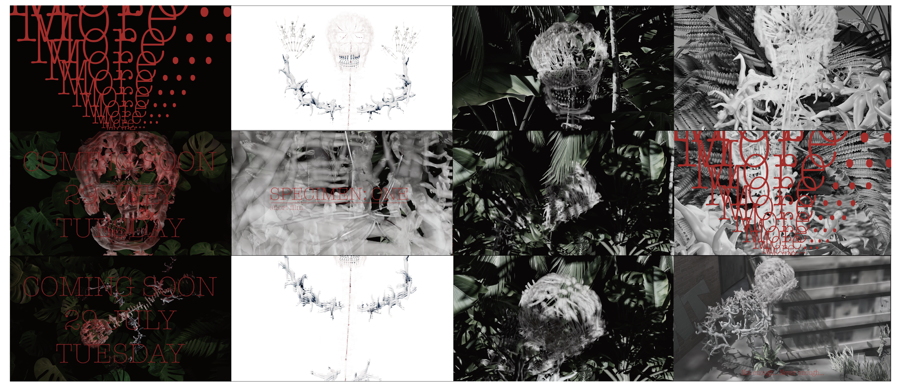
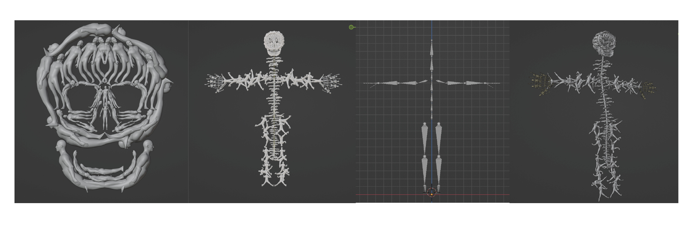
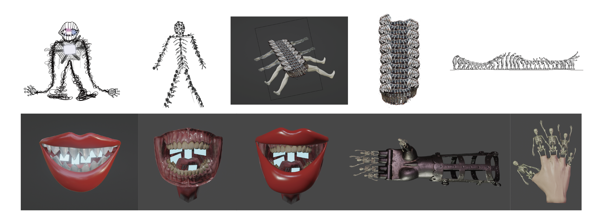

This is the teaser for a short film set in a laboratory, where an ancient human-insect speciman is discovered.
Through a series of flashbacks, the film unravels the story of this creature --
how its unstoppable greed led it to devour the Earth, only to ultimately perish within the bottomless void of its own desire.
 character design process
character design process

inspiration & collage
